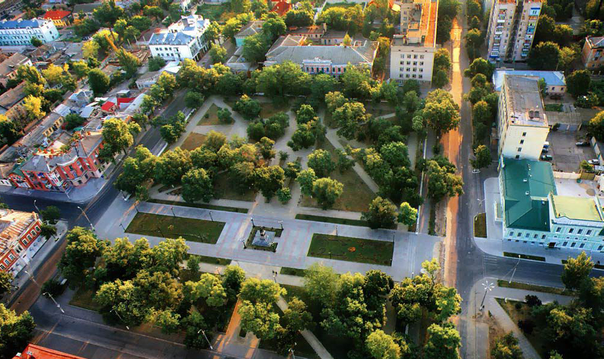

Вулиця Суворова
Чудове місце дня прогулянок
У Херсоні і далеко за межами нашого міста про це дивно привабливому місці знають мільйони людей: вулицю Суворова в Херсоні по праву називають "душею" нашого міста.
Пройти швидким кроком всю Суворовську, як називають улюблену вулицю самі херсонці, можна всього за 15 хвилин, вся пішохідна дистанція становить понад 1733 середніх кроків, а ось зробити справжній променад - вдосталь нагулятися: пройтися не поспішаючи, на вибір зупинитися у цікавих місць, зайти в магазини чи кафе - не вистачить і дня.
Найвідоміша в місті вулиця Суворова стала пішохідною ще в 70-ті роки ХХ-го століття. «Душа» Херсона нагадує пішохідну авеню. Уздовж історичних і нових будівель, недалеко від Шевченківського парку, здавна ростуть Платанове дерева, щорічно скидаючи стару кору
Цікаво, що давним-давно наша унікальна пішохідна магістраль (а це чотири п'ятих від однієї милі) була вимощена гранітом, по ній здавна ходили ошатні дами з кавалерами, а взимку каталися на санях, запряжених кіньми.
Звичайно ж, таким старовинним будинкам необхідна і фасадна реставрація, і ремонт дахів, і відновлення історичного вигляду ...
При цьому, Суворовська завжди залишається місцем для ділових зустрічей, романтичних побачень, приємного проведення часу.
Тут відпочивають з дітьми, проводять яскраві фестивалі, відзначають різні свята, обговорюють всілякі новини ... Ми любимо свою Суворовську.
Вулиця Суворова
Чудове місце дня прогулянок
Потьомкінський сквер - один з кращих в Херсоні. Прогулянка по цьому скверу допоможе вам ближче пізнати саме місто, а також ви отримаєте масу приємних вражень. Не так давно сквер реконструювали. Були розбиті нові газони, висаджено квіти і дерева. Місце стало надзвичайно красивим і затишним. Тут приємно не поспішаючи прогулятися після важкого трудового дня. Особливо красиво в Потьомкінському сквері навесні, коли розпускаються квіти на клумбах і рясніють всілякими відтінками.У сквері є кілька особливостей. Наприклад, в сквері працює безкоштовний wi-fi, тому тут можна з користю провести час. Ще по всій території скверу встановлено романтичні покажчики. Вони допоможуть вам визначитися з метою вашої прогулянки. Також навколо Потемкинского скверу є кілька затишних кафе. Поруч можна відвідати драматичний театр. Культурна програма на цілий вечір забезпечена.